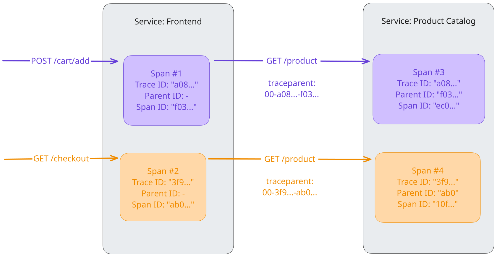

Context propagation
With context propagation, signals (traces, metrics, and logs) can be correlated with each other, regardless of where they are generated. Although not limited to tracing, context propagation allows traces to build causal information about a system across services that are arbitrarily distributed across process and network boundaries.
To understand context propagation, you need to understand two separate concepts: context and propagation.
Context
Context is an object that contains the information for the sending and receiving service, or execution unit, to correlate one signal with another.
When Service A calls Service B, Service A includes a trace ID and a span ID as part of the context. Service B uses these values to create a new span that belongs to the same trace, setting the span from Service A as its parent. This makes it possible to track the full flow of a request across service boundaries.
Propagation
Propagation is the mechanism that moves context between services and processes. It serializes or deserializes the context object and provides the relevant information to be propagated from one service to another.
Propagation is usually handled by instrumentation libraries and is transparent to the user. In the event that you need to manually propagate context, you can use the Propagators API.
OpenTelemetry maintains several official propagators. The default propagator uses the headers specified by the W3C TraceContext specification.
Example
A service called Frontend that provides different HTTP endpoints such as
POST /cart/add and GET /checkout/ reaches out to a downstream service
Product Catalog via an HTTP endpoint GET /product to receive details on
products that a user wants to add to the cart or that are part of the checkout.
To understand activities in the Product Catalog service within the context of
requests coming from Frontend, the context (here: Trace ID and Span ID as
“Parent ID”) is propagated using the traceparent header as it is defined in
the W3C TraceContext specification. This means the IDs are embedded in the
fields of the header:
<version>-<trace-id>-<parent-id>-<trace-flags>
For example:
00-a0892f3577b34da6a3ce929d0e0e4736-f03067aa0ba902b7-01
Traces
As mentioned, context propagation allows traces to build causal information
across services. In this example, the two calls to the HTTP endpoint
GET /product of service Product Catalog can be correlated with their
upstream calls in service Frontend by extracting the remote context from the
traceparent header and injecting it into the local context to set the Trace ID
and Parent ID. With that, it is possible in a backend like
Jaeger to see two requests as spans of one trace.

Logs
OpenTelemetry SDKs are able to automatically correlate logs with traces. This means they can inject context (Trace ID, Span ID) into a log record. This not only enables you to see logs in the context of the trace and span they belong to, but it also enables you to see logs that belong together across service or execution unit boundaries.
Metrics
In the case of metrics, context propagation enables you to aggregate
measurements in that context. For example, instead of only looking at the
response time of all the GET /product requests, you can also get metrics for
combinations of POST /cart/add > GET /product and
GET /checkout > GET /product.
| Name | Calls Per Second | Average Response Time |
|---|---|---|
* > GET /product | 370 | 300ms |
POST /cart/add > GET /product | 330 | 130ms |
GET /checkout > GET /product | 40 | 1703ms |
Custom Context Propagation
For most use cases, you will find instrumentation libraries or native library instrumentation that handle the context propagation for you. In some cases no such support is available and you want to create that support for yourself. To do so you need to leverage the previously mentioned Propagators API:
- On the side of the sender, the context is injected into the carrier, for example, into the headers of an HTTP request. In other cases, you need to find a place that can store metadata for your request.
- On the receiving side, the context is extracted from the carrier. Again, in the case of HTTP, this is retrieved from the headers. In other cases, you pick the place you chose on the sending side to store the context.
Note that it is possible to propagate context in protocols that do not have a dedicated field for metadata, but you have to make sure that on the receiving side they are extracted and removed before the data is processed, otherwise you may create undefined behavior.
For the following languages a step-by-step tutorial exists for custom context propagation:
Security best practices
Propagation involves sending and receiving data across service boundaries, which can have security implications.
External services
When your service interacts with external services (services you do not own or trust), consider the following:
- Incoming context: Be cautious when accepting context from external sources. Malicious actors could send forged trace headers to manipulate your tracing data or potentially exploit vulnerabilities in context parsing. You might want to ignore or sanitize incoming context from untrusted sources.
- Outgoing context: Be mindful of what you propagate to external services. Internal trace IDs, span IDs, or baggage items might reveal sensitive information about your internal architecture or business logic. You may want to configure your propagators to not send context to external or public-facing endpoints.
Baggage
Baggage allows you to propagate arbitrary key-value pairs. Since this data is propagated across service boundaries, avoid putting sensitive information (like user credentials, API keys, or PII) in baggage, as it might be logged or sent to untrusted downstream services.
Support in Language SDKs
For the individual language-specific implementations of the OpenTelemetry API & SDK, you will find details on the support of context propagation in the respective documentation pages:
For languages .NET, Rust, and Swift, the language-specific documentation for context propagation is missing. If you know any of those languages and are interested to help, learn how you can contribute!
Specification
To learn more about context propagation, see the Context specification.
Feedback
Was this page helpful?
Thank you. Your feedback is appreciated!
Please let us know how we can improve this page. Your feedback is appreciated!